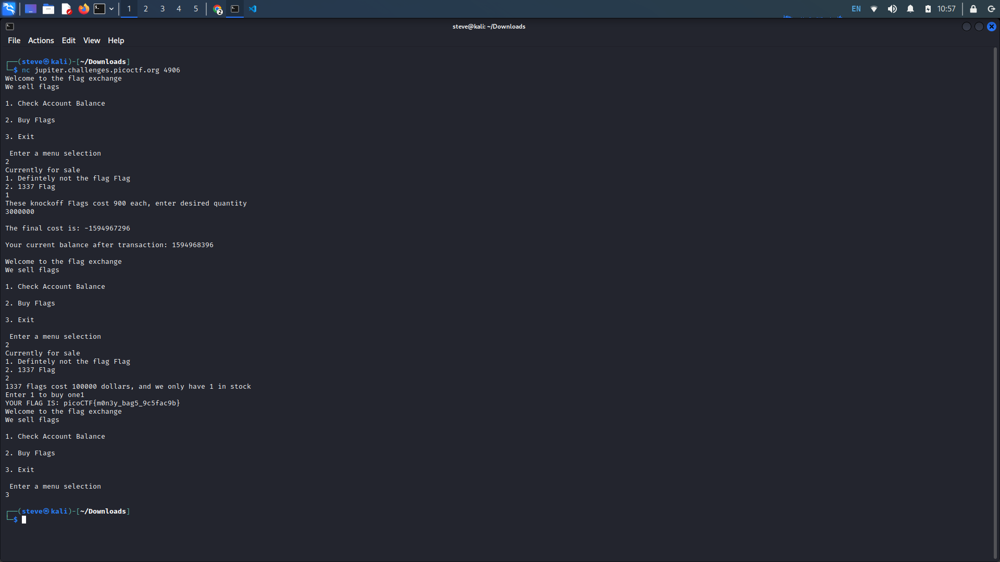

Special
Description: There's a flag shop selling stuff, can you buy a flag? Source. Connect with
nc jupiter.challenges.picoctf.org 4906.
Writeup: Looking through the source code, notice these...
- The use of the int data type for the total_cost variable (line 38)
- The multiplication of 900 to the number_of_flags variable (line 39)
- If total cost is less than or equal to account balance, new account balance equals account balance - total cost (lines 41, 42)
An overflow in our total cost causes a negative value, and when the program calculates our new account balance, our starting balance minus a negative number will give us a positive value.
